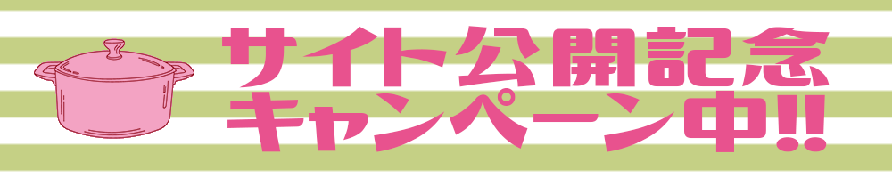

ログイン
新規登録
マイページ
ログアウト
ご利用中のブラウザでは、JavaScriptが無効になっています。サイトをご利用の場合はブラウザ設定でJavaScriptを有効にしてご利用ください。
アクセス数ランキング
1
2
3
アクセスランキングをすべて見る
好評レシピ
最近見たレシピ
ログイン
新規登録
マイページ
ログアウト

定番のキーワード
キャベツ
大根
白菜
じゃがいも
もやし
豚肉
鶏肉
和食
洋食
中華料理
その他のキーワード
時短
簡単
料理の基本
ヘルシー
子供が喜ぶ
節約
このサイトへのご意見をお聞かせください
サービスへのご意見・ご要望
機能の不具合
レシピで気づいた点の報告
意見を送る
メニューバー